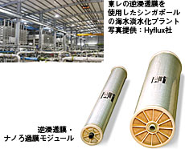

受賞歴 2006年
▼年度を選ぶ
| 月 | 授賞機関名 | 表彰名 | 表彰内容 |
|---|---|---|---|
| 12 | 繊研新聞社 |
第37回繊研合繊賞 「グランプリ」 |
素材メーカーと小売りの戦略的パートナーシップの構築＝東レ、ユニクロ |
|
第37回繊研合繊賞 「ヒット賞」 |
マイクロファイバー使いの織・編物「サミア」シリーズの販売 | ||
| 7 |
日本インダストリアル・ エンジニアリング協会 |
第34回 日本IE文献賞 |
トーレ・プラスチック・アメリカ ルミラー技術 課長 古谷広 生産性向上に資する独自の工程管理支援システム PCMに関する文献・報告 |
| 6 | （社）繊維学会 | 第31回技術賞 | 革新的な繊維構造制御技術から生まれた“シルックデュエット” |
| 5 | （社）高分子学会 | 平成17年度 高分子学会賞 |
電子機器用炭素繊維強化複合材料の開発と工業化 |
| 3 | （財）大河内記念会 | 第52回大河内賞 記念生産賞 |
非感光ポリイミド法による携帯電話用液晶ディスプレイ向け高性能カラーフィルターの開発
|
| （財）日本ファッション協会 |
第2回日本 クリエーション大賞 「環境技術部門」 |
世界の水問題に貢献する分離膜技術の開発  |
|
| （社）日本化学会 | 第11回技術進歩賞 | 柱状構造を用いた超高感度DNAチップの開発と工業化 | |
| 2 | 国際ナノテクノロジー 総合展・技術会議 |
nano tech大賞2006 （材料・素材部門） |
アロイ技術をベースにナノレベルでの分離技術の開発 |